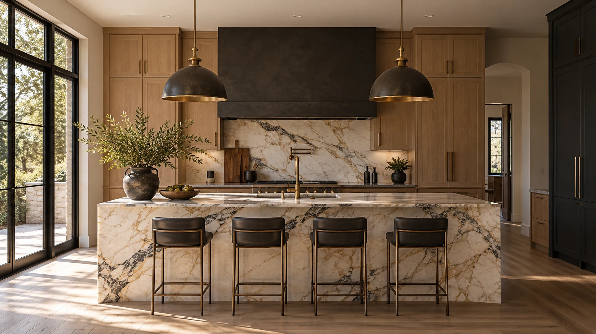
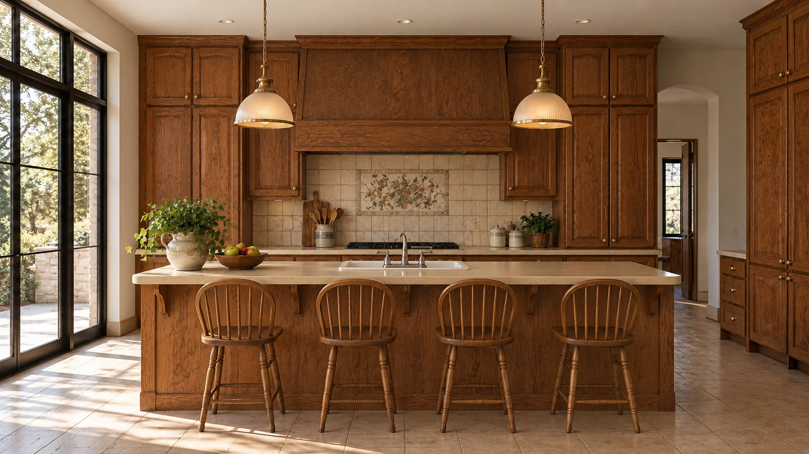

We start with you.
The room. The routines. The things you want to change. A good design starts with a better conversation.

CONSIDERED DESIGN. EXTRAORDINARY LIVING.
Beautiful spaces are built around you.
Let's imagine what yours could become.
From the first idea
to the smallest detail.
01 / THE POSSIBILITIES
See what thoughtful design can change.
Drag the line. Discover the difference.

BEFOREAFTERNATURAL MODERN / KITCHEN
Oak, expressive stone and a welcoming island.
A concept for the heart of everyday life.
Illustrative AI-generated design studies. These are not completed client projects.
02 / YOUR MATERIAL STUDIO
Explore a live 3D kitchen study.
Rotate the space. Change the materials. Find your mood.
Loading the 3D studio…
Drag to rotate · Buttons available for keyboard navigation
YOUR PALETTE
Warm timber, creamy stone and brushed brass. Understated, tactile and inviting.
A schematic 3D study, not a measured design or a construction plan.
03 / A MORE CONSIDERED EXPERIENCE
Your priorities guide the process. Clear decisions, thoughtful materials and a plan you understand before the build begins.
The room. The routines. The things you want to change. A good design starts with a better conversation.
Bring the layout, materials and scope into focus. Make informed choices before committing to construction.
Align the details, coordinate the build and make room for a home that works beautifully.
04 / YOUR DESIGN ADVISOR
Tell us what isn't working. Explore a style, build a starting brief and save the ideas that feel right for you.
Interactive planning demo. Live AI activates when connected.
BEFORE YOUR FIRST CONVERSATION
Start with your room, priorities and a few inspiration photos. The design planner helps organise a brief for your first conversation.
Yes. The material studio lets you compare three starting palettes. Final selections need samples in your home and a confirmed project specification.
Size, layout changes, materials, utilities and local conditions all affect cost. This concept does not provide binding quotes or promise a fixed renovation price.
The photographs and 3D room here are illustrative design studies. A finished client website will use verified projects, real reviews and approved business details.
THE NEXT CHAPTER OF HOME